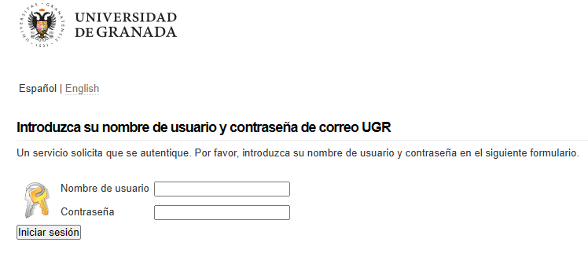

Autentificación e identificación
Andrés Millán Muñoz
delightfulagony
Juan Antonio Villegas Recio
Te acercas al banco

Introduces tu tarjeta

Metes el pin

Y te llevas tu dinero

Un ritual habitual
Este ha sido un ejemplo de
¿Qué es la identificación?
Es el proceso en el que una persona reconoce ser ella misma.
Sistemas de login tradicionales

Hasta ahora, solíamos usar correo o usuario y contraseña.
En la práctica, no es suficiente
¿Podría suplantarnos alguien?
¿Y qué ocurre si se filtran?
Leak de Adobe…

… de Yahoo…

… de Twitch…

… Y, cómo no, de Facebook.
Una identidad digital para la nueva era
Necesitamos una forma de identificarnos fielmente en internet.
Identidades digitales
Es la información de una entidad para representar un agente externo
ISO/IEC 24760-1 define una identidad como conjunto de atributos relacionados con una entidad.
Certificados digitales
Las identidades digitales se representan mediante certificados digitales.
Contienen información relacionada con la persona, y pueden ser emitidos por una autoridad de certificación.
Los servidores no crecen en los árboles
Mantener un servicio cuesta dinero. Pero rara vez el usuario paga directamente.
¿Cómo se costea entonces la infraestructura?
La publicidad
Las empresas pagan a las páginas para mostrar su publicidad.
Con el tiempo, se dieron cuenta de que podrían afinar el público objetivo.
Nacen así las cookies de seguimiento.
Identidades y cookies
Las cookies de seguimiento son una forma de observar a un usuario. Las empresas de publicidad crean un perfil basándose en tus datos de navegación.
Así, consiguen rastrearte y aprender sobre tus intereses.
Oye, ¿pero esto no es muy abusivo?
Sí.
Y así lo cree también la Unión Europea.
La GPDR entró en vigor en el año 2018. Fuerza a las páginas web a pedirte consentimiento para que tus datos sean analizados.
Es una forma de proteger al usuario.
Aunque eso signifique molestos banners.

Extensiones
Se han lanzado varias extensiones para protegernos de la publicidad y el seguimiento.
Algunos ejemplos son
Un arma de doble filo
La identificación es un bien necesario…
… Pero algunas personas se han intentado aprovechar de la capacidad de identificar a usuarios online.
Necesitamos métodos más robustos
Más tarde exploraremos cómo se debe hacer.
Spoiler: la autentificación ayudará mucho.
Métodos modernos
- Integridad
MAC

Cifrado de llaves

Firma digital


Otros métodos
Control de accesos
Verificación en dos pasos
Control de accesos
Métodos hardware y software
 Videovigilancia
Videovigilancia
 Software
Software
Verificación en dos pasos
Técnica de identificación cuya idea básica es añadir un paso más a las técnicas de verificación usuales.

OAuth
OAuth es un estándar abierto que permite la autorización segura mediante el uso de un API

Biometría
La biometría es la identificación automática de los individuos en función de sus características biológicas.